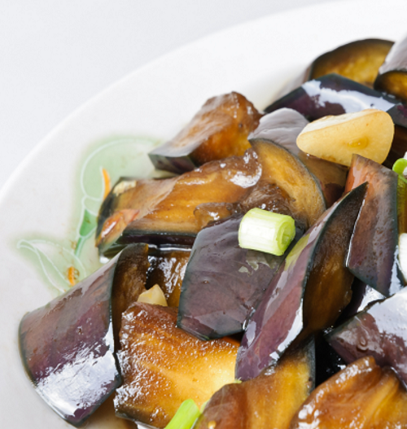

Хаштай хуурга
Хаш нь нь антиоксидант, полифенол, А, С зэрэг витаминуудаар баялаг тул (эсийг гэмтлээс хамгаалахад) тусална. Мөн олон төрлийн эрдэс бодис агуулдаг.Хашийг тогтмол хэрэглэснээр нь зүрх судасны эрүүл мэндийг дэмжиж, чихрийн шижин өвчнөөс урьдчилан сэргийлэх, хорт хавдрын эрсдлийг бууруулах, танин мэдэхүй, тархины үйл ажиллагаа сайжруулах зэрэг олон төрлийн ашиг тустай хүнс юм.

Орц:
- 2 ш Хаш
- 1 ш Сонгино
- 1 ш Ногоон чинжүү
- 1 ш Улаан чинжүү
- Улаан лоолийн соус
- Үхрийн мах
- Давс \ өөрийн амталгаагаар\
- Оливын тос
Заавар:
- Эхлээд хашаа хальсалж, дөрвөлжин шоо хэлбэрээр хэрчинэ.
- Улаан, ногоон чинжүү, сонгиноо хэрчээд махаа нимгэн байдлаар хэрчинэ.
- Хүнсний ногоогоо хэрчиж бэлдсэний дараа хайруулын таваг дээрээ оливын тосоо хийж, сонгиноо хуурна.
- Үүний дараа чинжүү болон махаа нэмж зөөлөн гал дээр 2-3 минут хуураад улаан лоолийн соусаа хийж хутгана.
- Давсаа өөрийн амталгаагаар хийж амтлаад, хашаа зөөлөртөл чанаж болгоход хоол бэлэн болно.